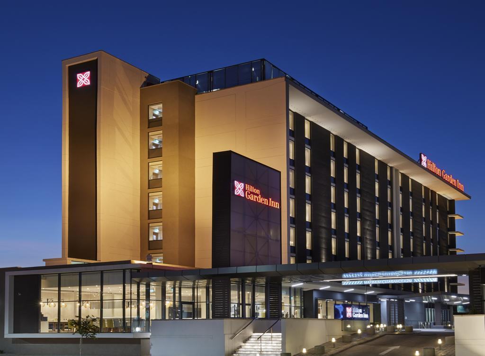
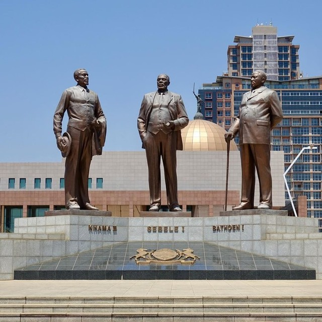
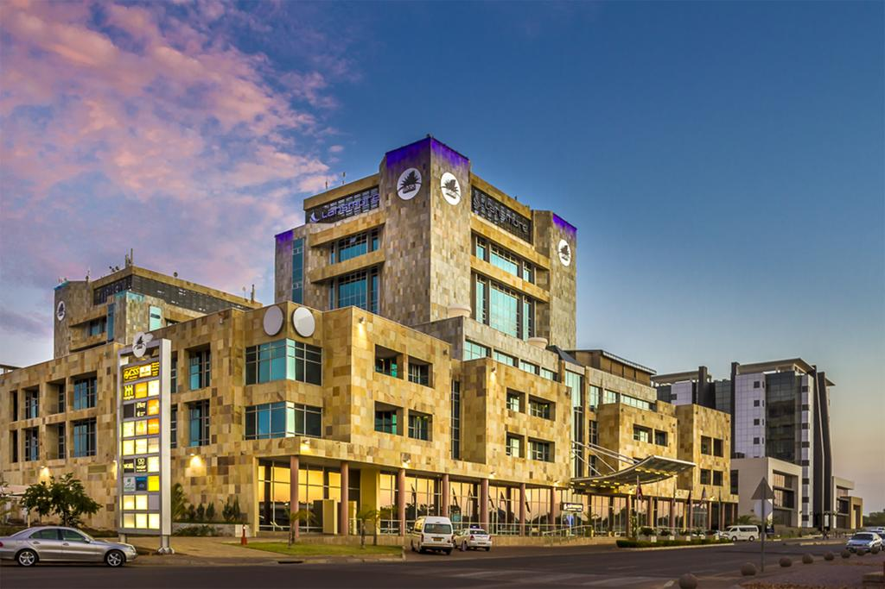

Hi there! Thanks for visiting our website.
Gaborone is the capital city of Botswana. It’s known for the Gaborone Game Reserve, sheltering native animals like wildebeest and impala, plus resident and migratory birds.
To the city’s southwest, rhinos and giraffes inhabit the Mokolodi Nature Reserve. Footpaths lead to city views at the summit of Kgale Hill.
In the city center, the National Museum and Art Gallery displays art and cultural artifacts. Gaborone has better infrastructure like tired roads, big and multiply malls, fancy hotels and lodges and many other things.
History about Gaborone
The city that Kgosi Gaborone founded was first called Gaborone's Village by the first European settlers. It was later shortened to Gaberones.
Cecil Rhodes, a mining magnate and founder of the De Beers mining company, built a fort for colonial administration across the river from Gaberones.
Our Vision.
Our Vision is a transformational agenda that defines our aspirations and goals as a Website Team.
It aims to transform Gaborone from an upper middle-income city to a high-income city through attracting more tourists and investors from other countries through our website.
Our website will set out a compelling vision of what our future will look like and in the process create broad prosperity for not only outsiders but for all, especially locals who never stepped their foot in the city.


Our Mission.
Our mission is to contribute towards the economic and financial well being of the country by involving in tourists attraction strategies through website,
and for our website to include information about not only Gaborone, but also other parts of Botswana.
Our crew is also eager to serve our clients with effective website services.